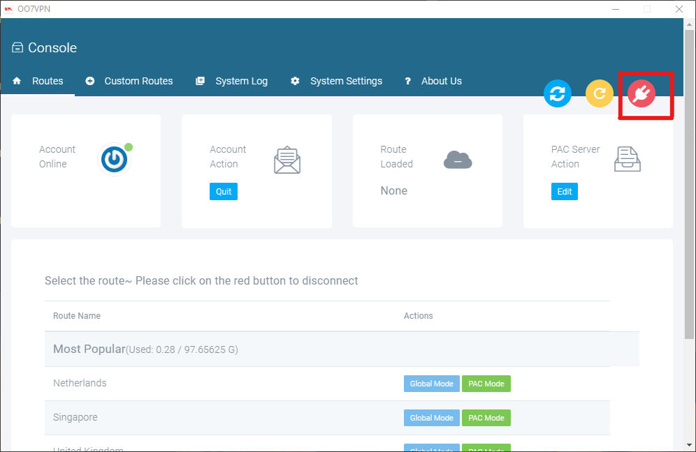

Please remember to click on the red button on the top right corner to disconnect OO7 client after each use. Otherwise you must disable proxy for Chrome to get onto internet.

Disable proxy for Chrome on Windows
- Click on the Chrome Menu in the browser toolbar.

- Select Settings.

- Click Advanced.

- In the “System” section, click Open proxy settings. This will open the Internet Properties window.

- Under “Local Area Network (LAN) settings,” click on LAN settings.

- Under “Automatic configuration,” uncheck Automatically detect settings. Also make sure Use a proxy server for your LAN is unchecked too.

- Click OK, and OK.
Disable proxy for Chrome on Mac
- Click on the Chrome Menu on the browser toolbar and select Settings.

- At the bottom of the screen, click Advanced.

- Under “System,” click Open proxy settings. This will open the Network Settings window.

- In the “Proxies” tab, under “Select a protocol to configure,” uncheck every protocol.

- Click OK and then Apply. You may then close any other open menus.